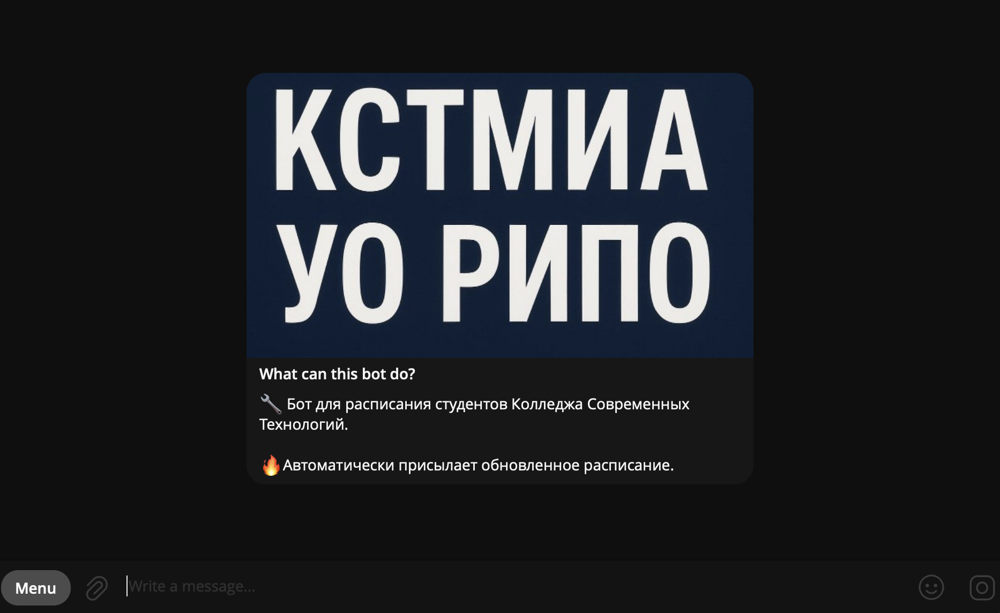
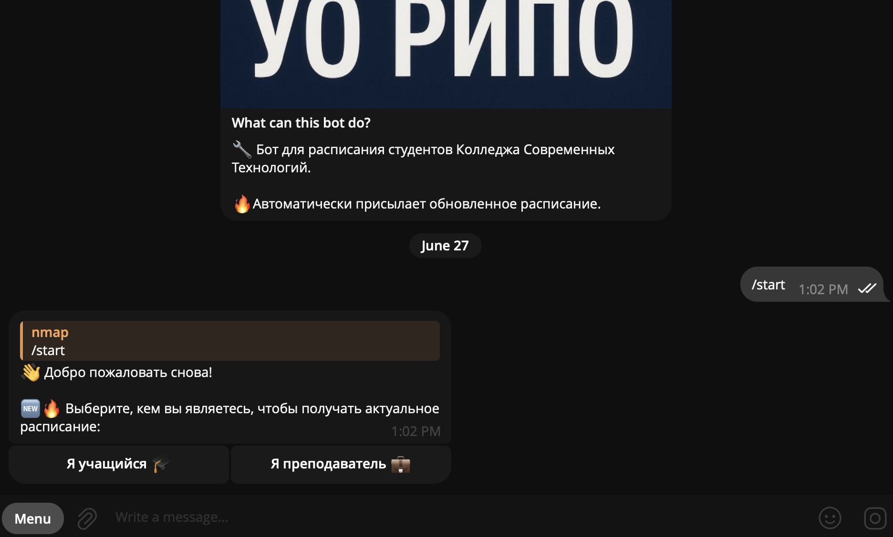
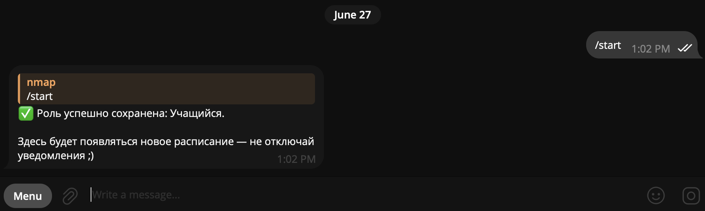
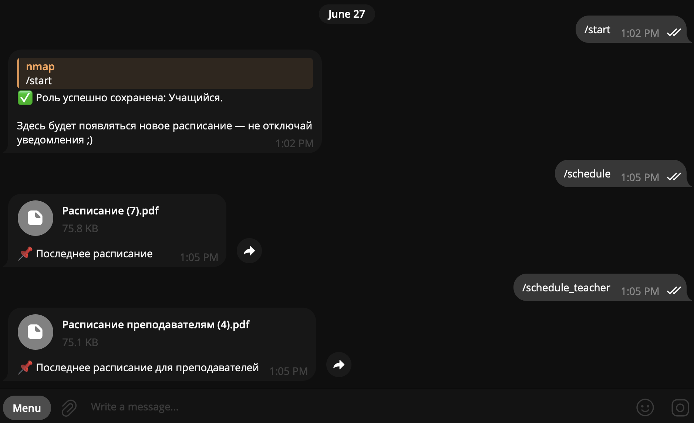
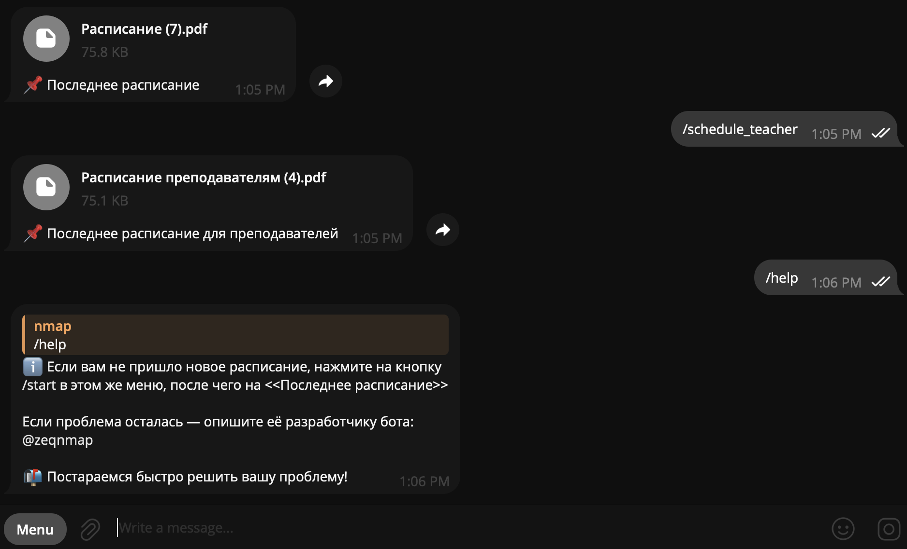

When I started college, checking our schedule was a total nightmare. The bad thing is that, even now, the schedule still updates every morning, or sometimes even late in the afternoon. All students were annoyed that they had to visit the college website and press about five buttons just to check if the schedule had been updated. So I already knew how to fix this routing, and I'm so glad that I was taking programming courses at the time.
Before I started working on my bot, I asked about 30 people how they wanted to use it. After the polling, I built a beta version of the bot to see how popular it would be. I made a Telegram bot that had a simple logic. First I set up the download logic: the bot would fetch the PDF file from the website. Secondly, I made a logic so that bot knew when the file was updated or not by checking its size. And when students wanted to see the latest schedule, they only needed to press one button in a chat. It was absolutely successful idea! In the first 3 days I had about 200 users in my database. Of course word of mouth and my friends helped me to get so much users.
Realizing the usefulness of my innovation, I got down to finishing the project. First, I upgraded the logic so that bot knew whether the file was updated or not by checking its metadata, not its size. Secondly I set up broadcast messages to all students when the schedule updated. I tested my bot for one week to find and fix some bugs, and after that, I rented a bigger server and deployed it. Everyone was impressed.
Now, more than 400 people use my bot (about half of the entire college), including teachers. This is because the bot can now send the schedule based on your role in the college. Every morning the students, teachers and I receive our schedules.
Want to see how it looks under the hood? Check out the repository.

In this screenshot, you can see the introduction message and a short description what the bot does.

When you press the /start command, the main menu appears. The bot will greet you and offer to choose your role in the college.

After the previous step, the bot confirms that it has saved your role, and from now you will receive the schedule automatically each morning.

If students for some reason want to check teachers' schedule, or teachers want to get students' schedule, press /schedule or /schedule_teacher from the menu button respectively.

And of course, if you do not understand how to use the bot or want to ask something about the schedule feel free to message me!